自动化结果
flutter analyze integration_test/records_ui_capture_test.dart：无问题。- 相关 Widget 回归：27 / 27 通过。
- iPhone 17 Pro · iOS 26.2 Simulator：1 / 1 集成测试通过。
- Android Emulator · Android 15 / API 35：1 / 1 集成测试通过。
- 14 张截图经人工复核：无黑屏、裁切、错误网络串页。
验证 KT Wallet 移除底部“记录”Tab 后的信息架构、真实空状态、全钱包聚合记录，以及同名 Token 按网络和合约隔离展示。
| 验收点 | iOS | Android | 结果 |
|---|---|---|---|
| 底部导航仅：首页 / 资产 / 设置 | 通过 | 通过 | PASS |
| 首页“记录”作为独立入口，不再占用 Tab | 通过 | 通过 | PASS |
| 没有真实记录时展示“暂无交易记录” | 通过 | 通过 | PASS |
| 全钱包记录合并不同币种与网络 | 通过 | 通过 | PASS |
| Ethereum USDT 仅显示对应合约记录 | 通过 | 通过 | PASS |
| 切换 Polygon 后仅显示 Polygon USDT | 通过 | 通过 | PASS |
flutter analyze integration_test/records_ui_capture_test.dart：无问题。本报告验证的是移动端 UI 与过滤逻辑。为稳定复现，交易记录由测试专用 HistoryService 注入三条确定性记录；生产路由没有使用这些夹具。
夹具为 Ethereum USDT +2、Ethereum 原生 ETH -0.2、Polygon USDT -9。报告不将它们宣称为真实链上交易。
空状态同样通过成功但为空的历史结果触发，并明确断言旧模拟金额 -120.00 USDT 与 +0.05 ETH 不存在。
“记录”仅保留在快捷操作；底部导航为首页、资产、设置。
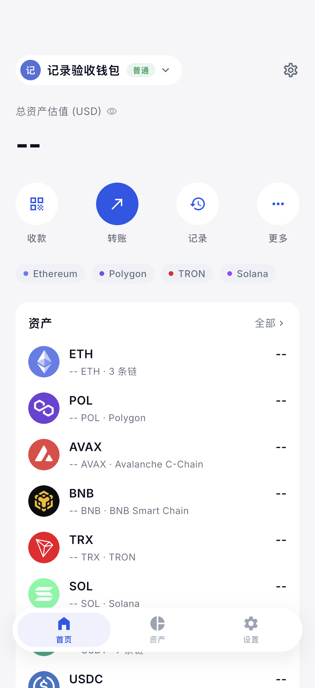
无底部“记录”Tab。
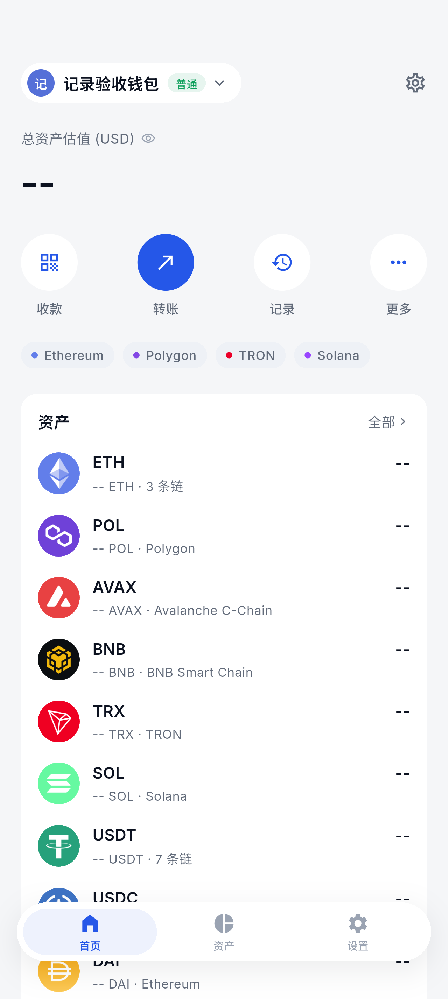
无底部“记录”Tab。
历史查询成功但结果为空时，不注入任何演示交易。
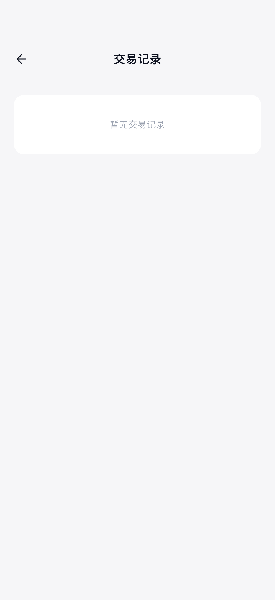
页面保持清晰的单一空状态。
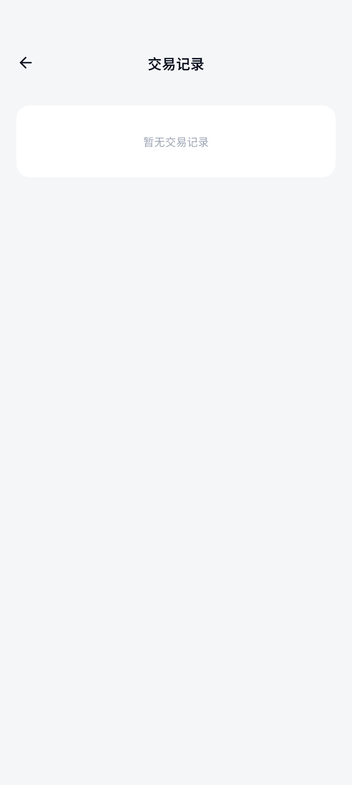
未出现旧模拟金额。
首页入口展示所有资产和网络的记录，按时间倒序合并。
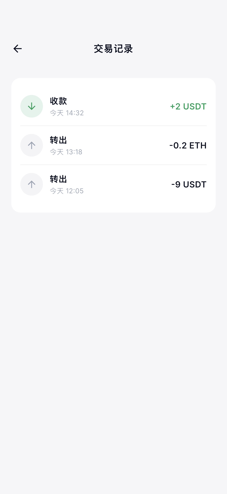
同时显示 ETH、Ethereum USDT、Polygon USDT。
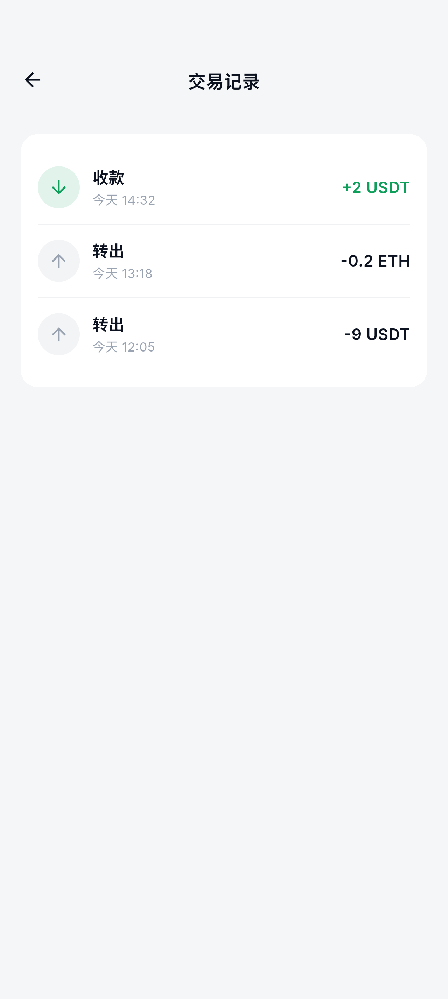
币种与网络记录合并正确。
资产详情页保留价格、合约与操作区，记录作为下方内容段落。
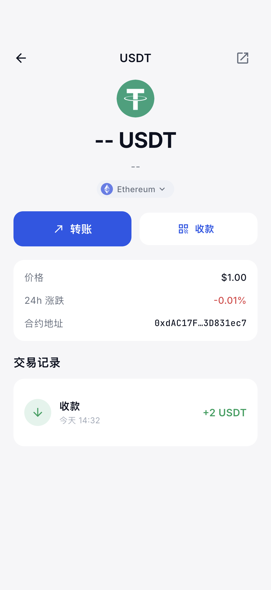
网络芯片与合约地址同步。
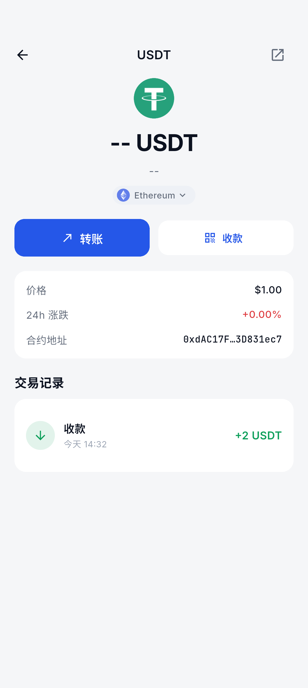
详情层级与记录段落连贯。
仅显示 Ethereum 上该 USDT 合约的 +2 USDT；排除原生 ETH 和 Polygon USDT。

同链原生币记录未混入。
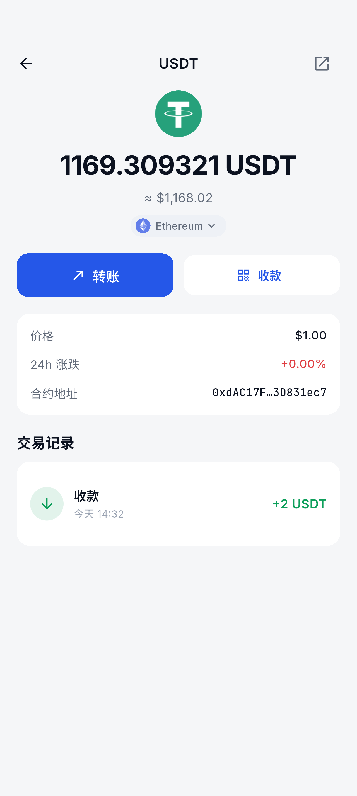
Polygon 同名 Token 未混入。
同名 Token 的不同部署从底部网络选择器切换。
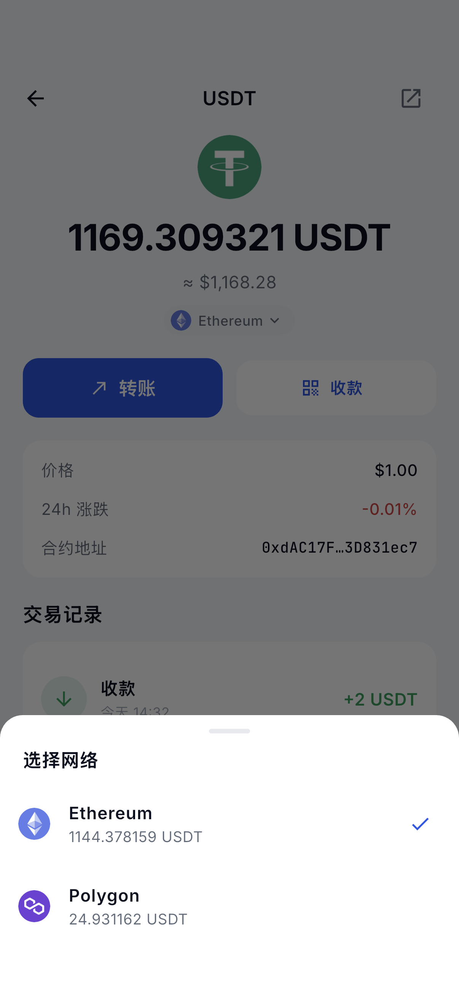
Ethereum 与 Polygon 独立展示。
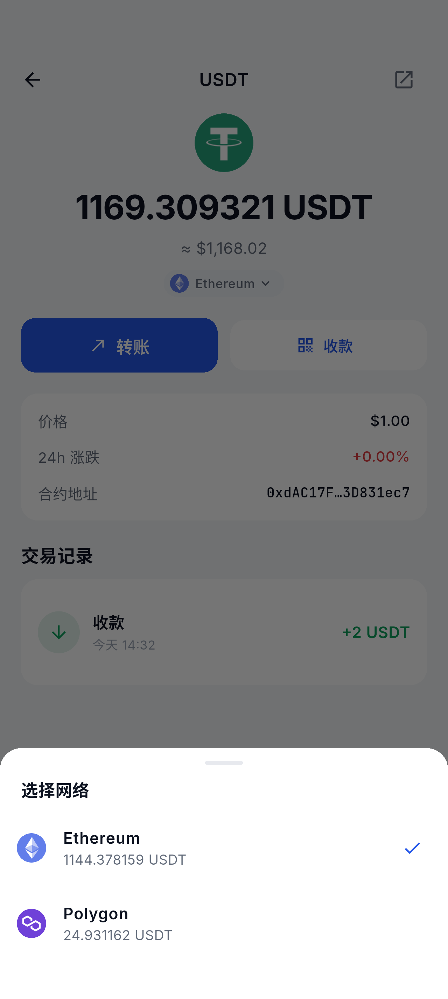
选中态和网络图标清晰。
切换后合约、网络芯片和记录一起更新，仅保留 -9 USDT。
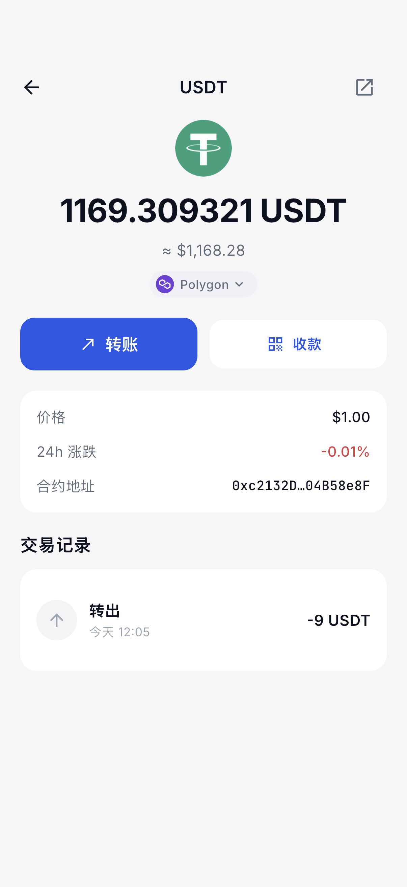
Ethereum USDT 与 ETH 记录均被排除。
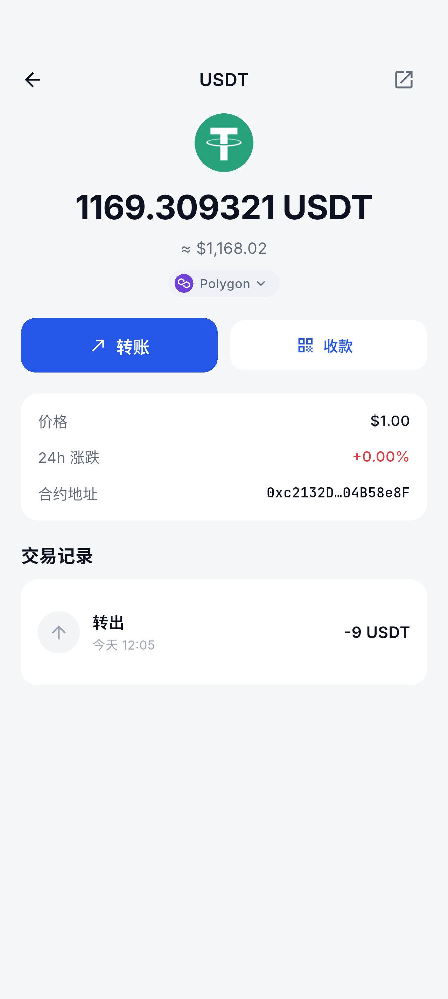
合约和记录同步切换。